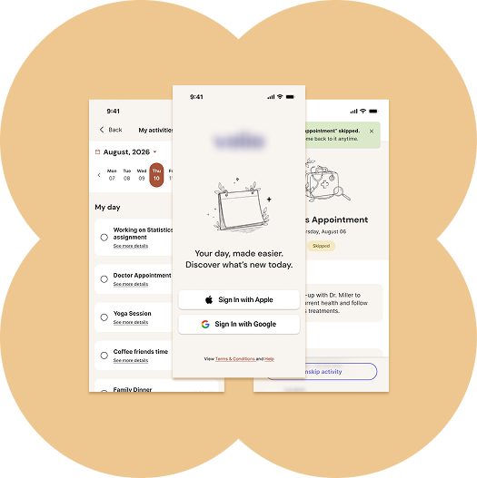
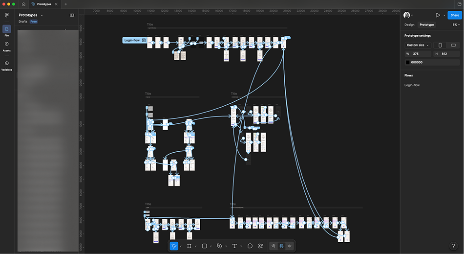
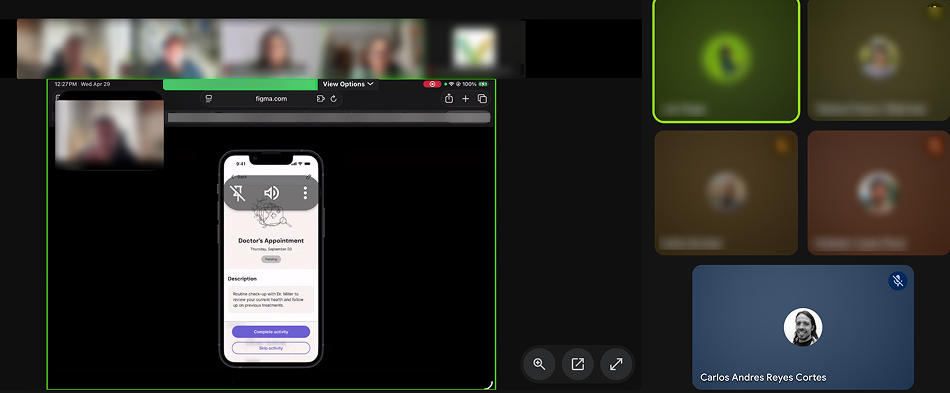
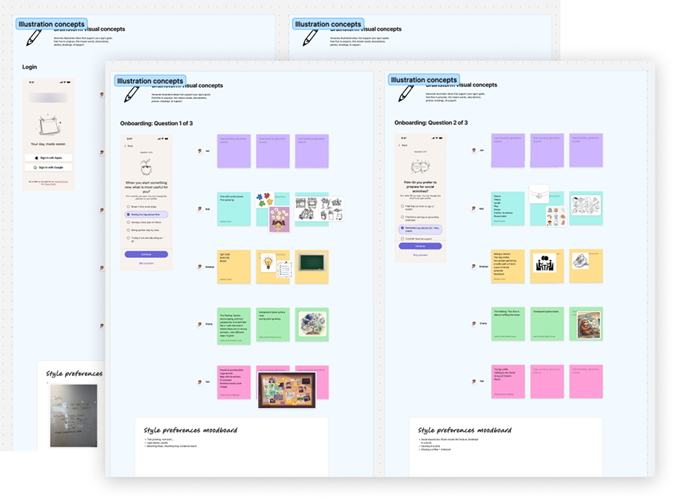
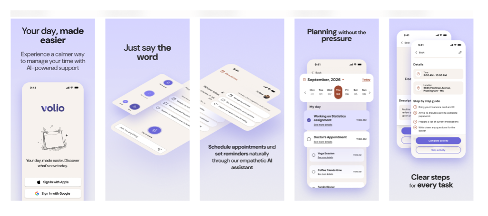

NeuroSync Project
2026
NeuroSync empowers neurodivergent individuals to overcome executive dysfunction and task paralysis through a radically predictable mobile ecosystem. Built as a low-stimulus environment, the platform integrates AI-driven task scaffolding and emotional state tracking to deliver routine calm for an initial multi-thousand user base.
Role
As UX/Visual Designer, I headed up the end-to-end prototyping phase to rapidly validate design concepts, inclusive testing methodologies, and storefront strategies, collaborating with cross-functional teams to translate user insights into technical product requirements.

1. Problem
Standard productivity applications fundamentally reject neurodivergent cognitive users. Opaque information architecture and high-stimulus digital noise trigger severe executive dysfunction, time-blindness, and task paralysis—driving rapid product abandonment among users navigating ADHD, Autism, and cognitive overload.
2. Solution
A. Prototyping
Drove the development of high-fidelity interactive prototypes tailored specifically to eliminate unnecessary cognitive load. By simplifying complex interface layouts and optimizing navigation paths during the design phase, I ensured the user flows were entirely optimized for accessible interaction before moving into live testing.


B. Mirror Usability Testing
Helped carry out an innovative "mirror testing" environment to validate these prototypes. By eliminating the traditional "observer effect," this framework allowed neurodivergent participants to interact with the interface naturally and stress-free, capturing highly accurate, unskewed behavioral data.
C. Designing for Cognitive Accessibility
Collaborative ideation sessions were headed up to establish an accessible, psychologically grounded in-app illustration framework. These visuals were utilized as intuitive signposts throughout the interface, whereby cognitive friction was successfully reduced and complex journeys were made to feel safe and predictable.


D. Optimizing the App Store Experience
Validated UI layouts were translated into high-impact storefront screenshots and visual assets for both the App Store and Google Play. Consequently, a cohesive, trustworthy, and inclusive first touchpoint was established, which immediately resonated with the target audience and allowed user acquisition to be streamlined.
Impact
- The mirror testing framework eliminated participant anxiety, resulting in near-perfect session completion and securing exceptionally rich, clean qualitative data for the development pipeline.
- Optimized marketing layouts and storefront screenshots were delivered ahead of schedule, guaranteeing full platform compliance and visual alignment well before the official product launch.
- Accessible visual storytelling and tailored layouts drastically cut cognitive friction for neurodivergent testers, proving the prototype will drive high adoption and engagement at launch.
Learnings
This project deepened my expertise in neuroinclusive design and ethical research. I learned that accessibility extends beyond WCAG checklists—it requires reinventing feedback methodologies themselves. Designing for specialized user demographics taught me to balance deep user empathy with structured, data-driven execution, reshaping how I build inclusive products that respect diverse cognitive needs without compromising technical feasibility.